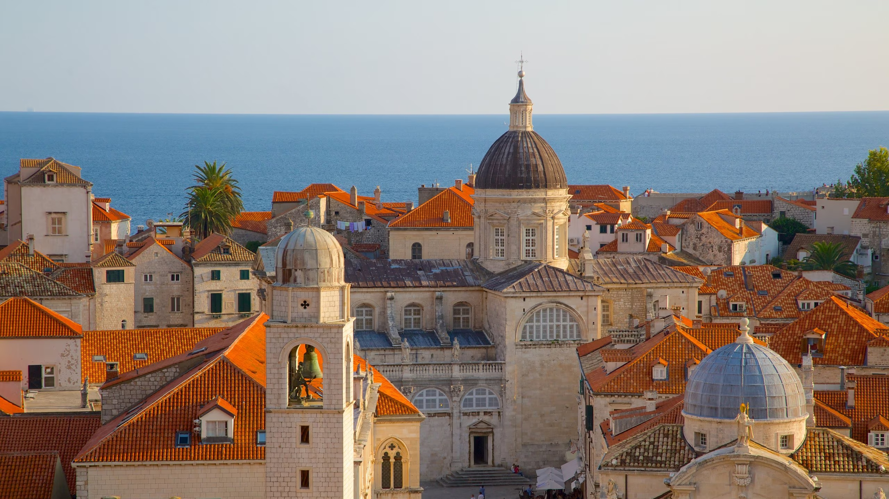

Conocida como la "Perla del Adriático", Dubrovnik es famosa por su casco antiguo medieval, rodeado de impresionantes murallas que se extienden hasta el mar. Es un destino que combina historia, cultura y paisajes costeros.

Casco antiguo
Pasea por las calles empedradas del casco antiguo, Patrimonio de la Humanidad por la UNESCO, y admira su arquitectura medieval y renacentista.

Murallas de Dubrovnik
Camina por las murallas que rodean la ciudad, ofreciendo vistas panorámicas del Adriático y una perspectiva única de Dubrovnik.

Playas y aguas cristalinas
Relájate en playas cercanas como Banje, o explora las islas Elafiti en un paseo en barco para disfrutar de la belleza natural de la región.